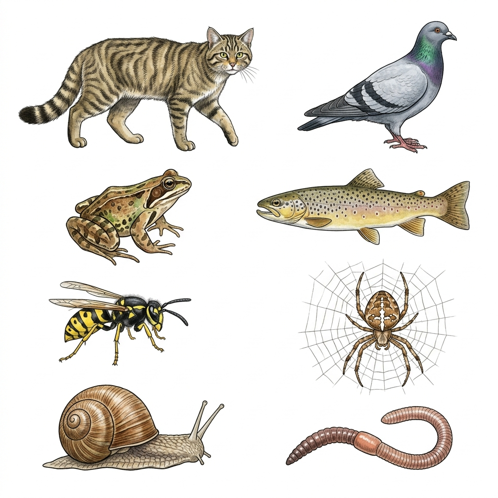
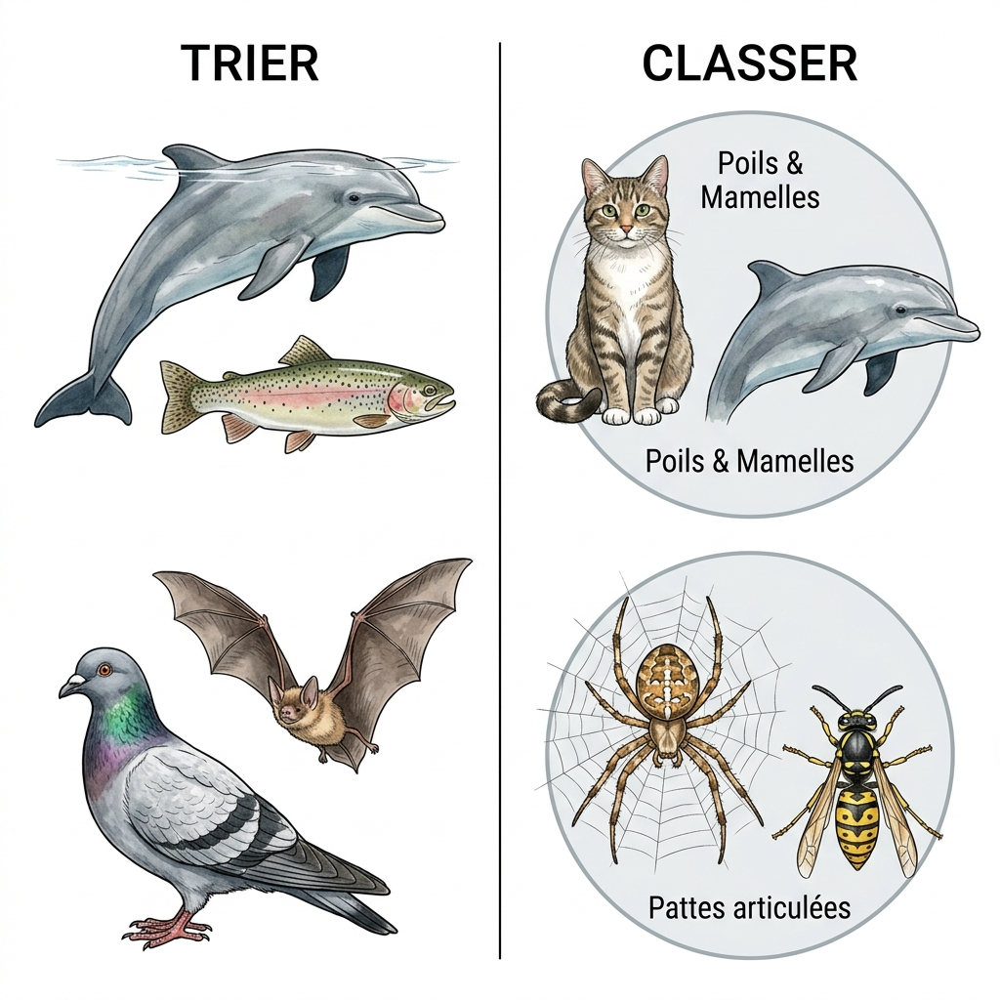
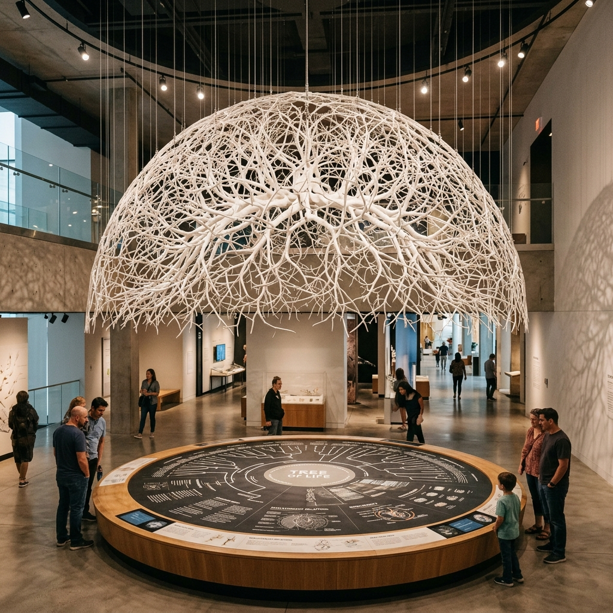

00 L'Enquête : Classer le vivant
Bonjour, jeune naturaliste ! Bienvenue dans notre laboratoire de recherche. Ta mission aujourd'hui est d'aider Mr Lejoly à classer scientifiquement les espèces qui vivent autour de notre école. Pour y parvenir, tu vas devoir mener l'enquête, observer de très près les caractères physiques des animaux et oublier tes vieilles habitudes de classement.
L'observation des attributs
Le piège du mode de vie
Les boîtes emboîtées
L'arbre de parenté
- Définir scientifiquement ce qu'est une espèce.
- Identifier et nommer les attributs physiques d'un animal (poils, squelette, antennes, etc.).
- Réaliser une classification sous forme d'ensembles emboîtés (des boîtes dans des boîtes).
- Traduire cette classification sous forme d'arbre phylogénétique.
- Pourquoi la ressemblance physique ne suffit pas pour définir une espèce (notion de descendance féconde).
- La différence entre classer par « ce que font » les animaux (mode de vie) et « ce qu'ils ont » (attributs).
- Que la classification phylogénétique montre les véritables liens de parenté évolutive.
- Que tous les êtres vivants descendent d'un même ancêtre commun.
Définition clé : Qu'est-ce qu'une espèce ?
En sciences, une espèce regroupe des êtres vivants qui partagent des caractéristiques physiques similaires, mais surtout qui sont capables de se reproduire entre eux et d'avoir des descendants féconds (c'est-à-dire des petits qui pourront eux-mêmes avoir des bébés plus tard).
Exemple : Un chat et une chatte forment la même espèce car ils peuvent faire des chatons qui, une fois grands, pourront faire d'autres chatons. En revanche, le cheval et l'ânesse peuvent faire un petit (le mulet), mais ce mulet est stérile (il ne peut pas faire de bébés) : le cheval et l'âne ne font donc pas partie de la même espèce !
01 L'Observation : Repérer les attributs physiques
Pour classer scientifiquement les animaux, nous devons dresser la liste de leurs attributs (les caractères physiques qu'ils possèdent, comme des poils, un squelette interne ou externe, des antennes...). Observe notre planche de biodiversité. Clique sur les cercles verts ou sur les noms des animaux pour analyser leurs attributs.

Espèces observées : 0 / 8
Fiche de naturaliste
Clique sur un numéro vert du schéma ou sur une espèce de la liste ci-dessous pour lancer l'observation de ses attributs physiques.
02 La Mécanique : Trier ou Classer ?
Pendant des siècles, l'Homme a trié les animaux selon leur mode de déplacement (ceux qui volent, nagent, rampent) ou leur lieu de vie (aquatique, terrestre). C'est un tri non-scientifique. Aujourd'hui, la biologie moderne classe les êtres vivants selon leurs attributs partagés. C'est la méthode phylogénétique.

🔍 Explorateur de classement
Le schéma ci-contre montre la différence entre trier et classer.
Clique sur les numéros verts de 1 à 4 pour comprendre les pièges et les règles du classement scientifique !
Deviens détective : ne te laisse pas piéger !
Pour chaque situation ci-dessous, retrouve le véritable plus proche parent de l'animal en évitant le piège du mode de vie ou de l'habitat. Clique sur les boutons pour tester tes connaissances.
1. Qui est le plus proche cousin du Dauphin ?
2. Qui est le plus proche cousin de la Chauve-souris ?
3. Qui est le plus proche cousin de l'Orvet (lézard sans pattes) ?
03 Les Groupes : Ensembles emboîtés et Arbre de parenté
Découvre comment nous pouvons classer nos 8 animaux locaux. Observe d'abord le tableau d'observation, puis suis les étapes pas à pas pour construire la classification sous forme d'ensembles emboîtés (les boîtes) et l'arbre de parenté final.
Tableau d'observation des attributs
| Animaux | Squelette interne | 4 membres | Poils & Mamelles | Plumes & Bec | Peau nue | Écailles soudées | Pattes articulées | Coquille calcaire | Corps annelé |
|---|---|---|---|---|---|---|---|---|---|
| Chat sauvage | Oui | Oui | Oui | - | - | - | - | - | - |
| Pigeon ramier | Oui | Oui | - | Oui | - | - | - | - | - |
| Grenouille rousse | Oui | Oui | - | - | Oui | - | - | - | - |
| Truite de rivière | Oui | - | - | - | - | Oui | - | - | - |
| Guêpe commune | - | - | - | - | - | - | Oui (6) | - | - |
| Araignée (Épeire) | - | - | - | - | - | - | Oui (8) | - | - |
| Escargot des bois | - | - | - | - | - | - | - | Oui | - |
| Ver de terre | - | - | - | - | - | - | - | - | Oui |
La boîte de classification (Ensembles emboîtés)
04 L'Arbre de la Vie : Tous parents, tous reliés
À l'image de la sculpture suspendue au Muséum des Sciences Naturelles de Bruxelles, la biologie moderne représente la parenté de toutes les espèces sous la forme d'un immense Arbre de la Vie. Explore les branches de l'arbre en cliquant sur les zones numérotées pour comprendre comment tout le vivant remonte à un unique ancêtre commun.

🌳 Explorateur de l'arbre
L'arbre suspendu dans le musée représente les liens d'évolution de toutes les espèces vivantes.
Clique sur le bouton vert au centre de l'image pour déployer l'Arbre de la Vie interactif et l'explorer !
05 Approfondissement : Secrets de la nature et Biodiversité
La classification moderne révèle les mystères les plus fous de l'évolution biologique. Découvre des animaux insolites qui bousculent nos repères et comprends pourquoi protéger chaque branche du vivant est vital.
Toutes les espèces vivantes de la planète sont reliées par des liens de parenté évolutifs. C'est l'arbre du vivant.
Un arbre précieux
Chaque fois qu'une espèce s'éteint en raison des activités humaines (pollution, déforestation, réchauffement), c'est une feuille ou une branche entière de l'arbre généalogique de la Terre qui disparaît pour toujours. Nous perdons une pièce unique de l'histoire de la vie.
La dépendance mutuelle
Les espèces d'un même écosystème partagent de fortes interactions. Par exemple, sans le ver de terre pour aérer et enrichir le sol, les plantes sauvages ne poussent plus. Sans plantes, plus d'insectes, et sans insectes, plus d'oiseaux.
L'Ornithorynque : le casse-tête
Cet animal d'Australie possède des poils et allaite ses petits (attributs des mammifères) ! Cependant, il n'a pas de mamelles visibles (les petits lèchent le lait qui suinte de sa peau), il pond des œufs (comme un oiseau ou un reptile) et possède un bec de canard. C'est la preuve vivante que les attributs évolutifs se combinent de façon fascinante au cours du temps.
Le Cœlacanthe : plus proche de nous ?
Ce poisson des profondeurs marines possède des nageoires charnues et épaisses contenant de véritables os articulés, au lieu des rayons habituels. Scientifiquement, il est beaucoup plus proche du chat ou du pigeon que de la truite ! Ses nageoires sont le vestige des ancêtres qui ont un jour développé 4 pattes pour marcher sur terre.
Le Tardigrade : l'indestructible
Cet animal microscopique à 8 petites pattes (proche des arthropodes) est l'être le plus résistant de la Terre. Il survit à des températures extrêmes de -270 °C à +150 °C, à la pression gigantesque des océans et même au vide spatial !
1,8 Million d'espèces
C'est le nombre d'espèces d'êtres vivants déjà découvertes, décrites et classées par les scientifiques à ce jour.
10 Millions estimées
Les scientifiques estiment qu'il existe en réalité près de 10 millions d'espèces sur Terre. L'immense majorité n'a donc pas encore été découverte !
50 par jour
Chaque jour dans le monde, les expéditions de naturalistes découvrent et décrivent en moyenne 50 nouvelles espèces (surtout des insectes et des champignons).